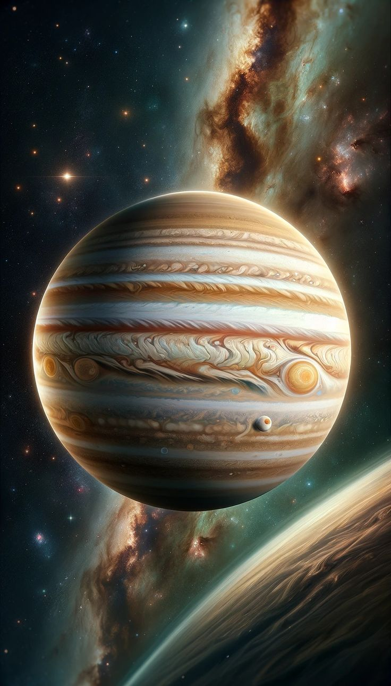

نظرة عامة
المشتري هو الكوكب الخامس من الشمس وأكبر كوكب في النظام الشمسي. يتميز بحجمه الكبير وهيكلته الغازية.
حقائق عن كوكب المشتري
| الخاصية | القيمة |
|---|---|
| القطر | 139,820 كم |
| عدد الأقمار | 79 |
| المدة الزمنية لدورة واحدة حول الشمس | 11.9 سنة |
استكشاف كوكب المشتري
تم إرسال العديد من المركبات الفضائية لاستكشاف المشتري مثل جونو وغاليليو.